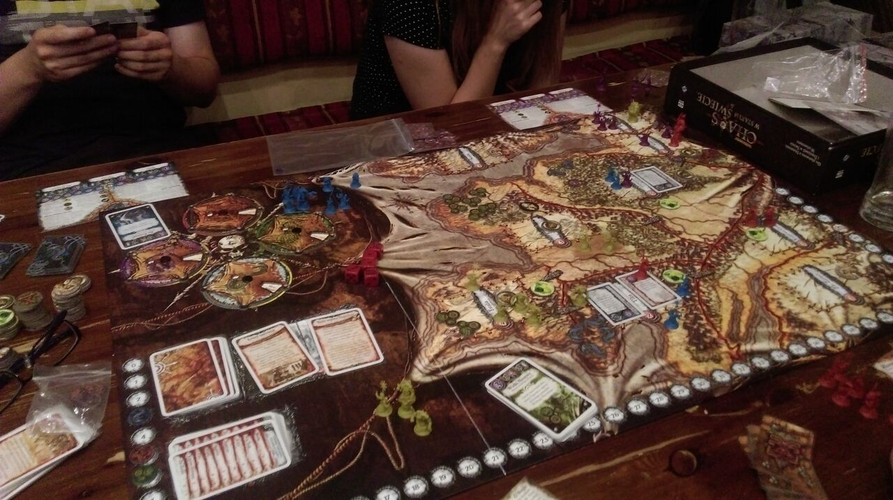
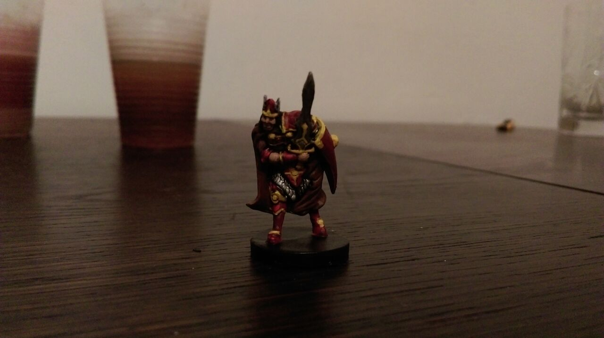
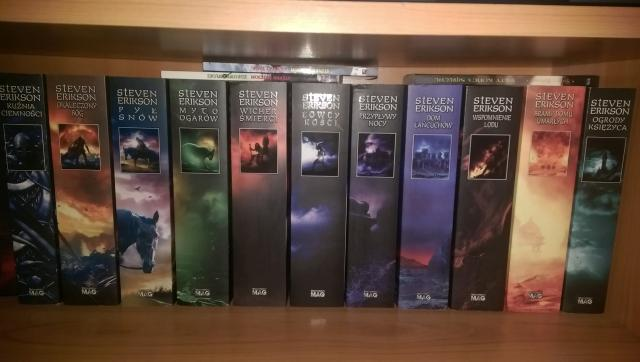
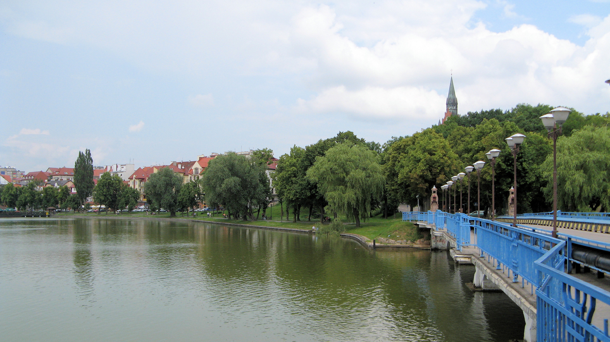

Magister inżynier mechatronik
Warszawa, PL
b.borawski92@gmail.com
+48 601 469 092
Programowanie
JavaScript
25%
HTML/CSS
40%
Java
20%
C++
15%
Znajomość języków
Polski - język rodzimy
Angielski - średniozaawansowany
Doświadczenie zawodowe
Kliknij poszczególne pozycje, aby rozwinąć szczegóły
- przygotowywanie dokumentacji technicznej aluminiowych systemów oferowanych przez firmę,
- wykonywanie obliczeń niezbędnych przy montażu systemów,
- dokonywanie zmian w istniejących rysunkach,
- sporządzanie modeli 3D poszczególnych rozwiązań,
- opracowywanie rysunków montażowych,
- przygotowywanie katalogów,
- odpowiadanie na zapytania odnośnie katalogów.
- projektowanie oraz budowanie maszyn CNC,
- obsługa maszyn oraz prezentacja ich działania klientom,
- przeprowadzanie sekcji aplikacji oraz kontakt z partnerami na rynkach zagranicznych,
- wsparcie konsultantów partnerów w prowadzonych działaniach,
- udzielanie informacji klientom na temat aktualnie oferowanych produktów,
- kontakt telefoniczny i bezpośredni z klientami.
- nauczanie podstaw konstruowania oraz programowania przy użyciu zestawów LEGO Mindstorms,
- prowadzenie zajęć z dziećmi w wieku od 6 do 14 lat,
- opracowywanie instrukcji prowadzenia zajęć dla innych instruktorów,
- zarządzanie kilkuosobowym zespołem,
- staż długoterminowy w ramach Programu Rozwojowego Politechniki Warszawskiej w okresie styczeń-marzec 2014.
Wykształcenie
Politechnika Warszawska
2015 - 2016
specjalność: Mikromechanika, studia magisterskie
Politechnika Warszawska
2011 - 2015
specjalność: Mikromechanika, studia inżynierskie
Dodatkowa aktywność
Członkostwo w Kole Naukowym ROBOMATIC Politechniki Warszawskiej
10.2012 - 10.2016
- programista mikrokontrolera w projekcie sześcionożnej platformy kroczącej typu heksapod,
- mechanik w projekcie robota klasy minisumo do walk turniejowych.
Udział w Grach Technicznych organizowanych przez Procter & Gamble
05.2015
Współorganizator Turnieju Robotów Mobilnych ROBOMATICON 2015
10.2014 - 03.2015
Prowadzenie zajęć z AutoCAD 3D w ramach programu PW Junior
01.2014
Współorganizator oraz sędzia podczas Turnieju Robotów Mobilnych ROBOMATICON 2014
10.2013 - 03.2014
Wolontariusz podczas II Nocy Robotów organizowanej przez Przemysłowy Instytut Automatyki i Pomiarów
24.05.2013
Umiejętności
Obsługa komputera
- Autodesk Inventor, AutoCAD, SmarTeam, SolidWorks, BricksCAD
- MS Office (Word, Excel, PowerPoint)
- IntelliJ, Eclipse, Codeblocks
Prawo jazdy kategorii B
Zainteresowania
Moje hobby
Moim ulubionym zajęciem jest spędzanie czasu przy grach planszowych.

W wolnych chwilach uczę się malować miniaturki do gier planszowych.

Lubię także dobrą książkę fantasy/science-fiction. Aktualnie czytam "Malazańską księgę poległych".

W miarę możliwości staram się podróżować. Najczęstszym kursem są Mazury.
